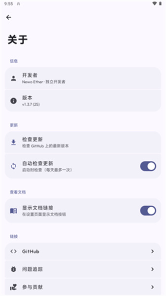

Agora 藏得真深：五个大多数人还不知道的隐藏功能
很多人把 Agora 当成一个简单的 BYOK 聊天客户端，但它藏着铺开可视化、生成中排队、多密钥切换等五个冷门却实用的功能。
你以为 Agora 就是个 BYOK（Bring Your Own Key）的大模型聊天客户端？拿把密钥粘进去就能聊？从官网了解到的就是这个路子，安装包从官方下载拿就行。但如果只用到这一层，那真的错过了不少好东西。我把它翻了个底朝天，发现五个官方几乎不怎么宣传但关键时刻能省大事的隐藏功能。
铺开可视化：把「发送范围」画出来
这是我最爱的一个。
长对话聊到后来，你有没有过这种错觉："我明明前面说过这件事，为什么模型像失忆了一样？" 你记得，不代表模型记得——上下文预算装不下了，旧消息会被挤出去，但你还是看得到它们。这种视觉和事实的错位，是长对话里最容易踩的坑。
Agora 设置里藏了一个开关叫 Visualize Context Roll-Out（中文翻译大概是「可视化上下文铺开」），开启后效果立刻不一样：当前请求预算装得下的消息正常显示，装不下、不会发给模型的那些整体变暗。变暗不是被删了，只是暂时"不在场"——你调大预算或者切个分支，它们会重新亮起来。

这个开关藏得真深，我第一次发现时愣了好几秒。大多数 BYOK 客户端要么根本不告诉你哪些消息没发出去，要么给你一个干巴巴的 token 数字。Agora 直接把事实画在你眼前：哪些在聊、哪些只是躺在历史里，一清二楚。
谁用得上：经常聊长话题、做复杂任务链的人。可以无视：每次只聊一两轮短问题的。
生成中排队：不等回复就打下一句
模型回复长的时候特别磨人，尤其是推理模型——先吐一大段思维链再给正文，一条回复等半分钟很正常。以前的做法是盯着屏幕干等，等完再打下一句。
Agora 允许你在当前回复还在生成时就打好下一条消息、点发送。这条消息不会立刻发出去，而是进入一个队列，界面上能看到排队状态。当前生成一结束，队列里的内容自动接上，模型无缝接着处理。
可以连排好几条，按顺序执行。配合停止按钮用更爽：不满意当前回复就停掉，重打一条更好的，队列里的旧草稿会被你的新输入覆盖。
这个功能没有什么显眼的入口，就是发送按钮的状态机设计里藏的一套规则。很多人用了几个月都没发现——因为在空闲时点发送是最自然的事，没人会特意在生成时去戳那个按钮。
Compact 胶囊：手动压缩救长对话
上下文预算快满了怎么办？一般的做法有两种：要么手动开新对话，要么用应用的自动压缩。Agora 两者都支持，但它藏了一个手动触发的入口——点开底栏的上下文占用指示器（就是模型条旁边那个油表一样的东西），菜单里有一个 Compact context 选项，随时手动触发一次压缩。
压缩不是删除，而是把早期对话的要点提炼成一个摘要胶囊，原来的消息还在，只是被摘要"代表"了。这样既省 token 预算，又不会把之前聊的东西全丢给新对话。
配合铺开可视化用效果最好：先看看哪些关键信息变暗了 → 点开油表手动触发 Compact → 摘要胶囊把要点重新带回可见范围 → 接着聊。一个是看清现状，一个是改变现状，两个功能搭在一起用特别丝滑。
多密钥轮换：一把不够就两把
很多人只配一把密钥就完事了，但 Agora 从设计上就支持多密钥管理。每把密钥单独勾选"活跃"单选按钮，随时切换。
这个功能什么时候真有用？
- 你有多个服务商的账号，不同场景用不同的；
- 某一把密钥限额或余额耗尽了，不用去设置里重新粘贴，直接切到另一把；
- 你想对比两家服务商同一个模型的回复质量，来回切换比开两个应用方便得多。
密钥存在 Android Keystore 里用 AES-256-GCM 加密，不进对话数据库，安全边界做得比较细。切换的时候底栏会显示当前活跃的是哪一把，不会搞混。
停止后自动新分支：失败的回复不丢
这个功能藏在"重新生成"按钮的行为里，没有专门的开关。
模型回复到一半你觉得方向不对，点停止。已生成的部分会留在对话里。然后点"重新生成"——Agora 不会覆盖原来的回复，而是创建一条新分支，让模型从同一条输入重新来一遍。原来那条不理想的回复还在另一条分支里，你随时能对比、复制里面有用的部分。
这个分支机制配合铺开可视化和 Compact，组成了一套完整的"试错→修正→再试"工作流，而且全程不丢上下文、不丢旧内容。缺点是分支多了之后历史线会有点乱，但如果你经常需要同一个问题多试几个方向，这个设计真的比那些"点重新生成就直接覆盖"的客户端要贴心。想了解分支的完整机制，可以去Agora文档翻一下。
一个坑别踩：Base URL 别画蛇添足
讲完好的，说一个容易踩的坑。
v1.3.7 起，Agora 对自定义 OpenAI 端点的 Base URL 做了自动处理，会自动补 /v1 后缀。但很多人（包括我自己）手贱去手动把 Base URL 写成 https://api.something.com/v1，结果请求被发到了 /v1/v1/models，同步模型列表直接失败，排查了半天才发现。
规则很简单：如果你的端点已经走了自动补全，Base URL 就写到域名根路径为止，别自己加后缀。加了反而会错。
收尾
Agora 的隐藏功能不止这五个，但这几个是我觉得最能直接影响日常使用体验的。铺开可视化让你不再被"我记得"的错觉坑到，生成中排队帮你把等待时间省下来，Compact 胶囊和多密钥轮换是给重度用户的生产力工具，停止后分支则是整个对话操作流里最聪明的一个设计。
把这些藏得真深的功能翻出来，Agora 才算是用透了。过程中用到的参考资料我同步在三个仓库里维护着：GitHub 放主版，Gitee 和 GitCode 做了国内镜像。